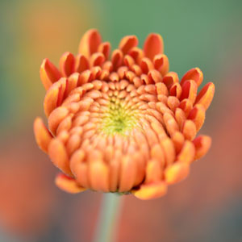

<ion-view view-title="{{chat.name}}">
	<ion-nav-bar class="bar-stable hide">
    </ion-nav-bar> 
	<ion-content class="bigbox" id="bigbox">
	    <header>
	        <div class="imgcontent">
		        
	        </div>
	    </header>
	    <section>
	        <div class="content">
		         <h3>景物质量管理系统</h3>
	        </div>
	        <div class="contenttwo" id="contenttwo">
	        	<ul>
	        		<li>
	        			<a href="#/classFlowerInfo"><div class="fa fa-home"></div></a>
	        			<p>实验花朵质量信息记录</p>
	        		</li>
	        		<li>
	        			<a href="#/statistics"><div class="fa fa-user"></div></a>
	        			<p>实验花朵质量信息统计</p>
	        		</li>
	        		<li>
	        			<a href="#/companyInfo"><div class="fa fa-music"></div></a>
	        			<p>生产与使用单位信息查询</p>
	        		</li>
	        	</ul>
	        </div>
	        <a href="#/"><p class="back">返回至登录页面</p></a>
	    </section>
	</ion-content>
</ion-view>